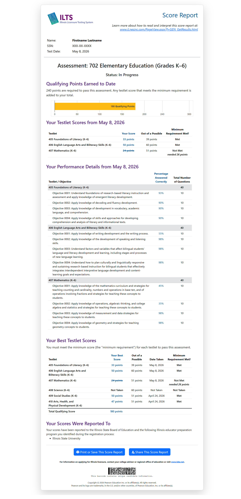

Learn how to navigate your individual testlet reports and your comprehensive assessment reports.

Here's the score report that you'll receive after taking a test that follows the modular testlet format. This report includes your scaled score on each testlet for that test date, and performance details by objective.
Your report includes your test date, your current assessment status, and your total qualifying points earned to date. This report shows your current, up-to-date testing status for the combined assessment, including your best score on each testlet that you've taken. If you received 240 or more qualifying points, you will receive a “pass” status. If you received fewer than 240 points, you will receive a “Did not pass” status. If you did not complete all testlets, you will receive an “In Progress” status.
In this section, you will find your total score for each testlet taken on the test date. This score is based on the number of items you answered correctly per testlet, scaled in accordance with the weight of the testlet as part of the overall assessment design.
This section of your score report contains information regarding your performance on each testlet/subarea and objective on the test. This information can help you identify your relative strengths and weaknesses.
Please keep in mind that minor fluctuations in scores are expected over repeated testing. While large differences in percent correct across objectives indicate relative strengths and weaknesses, small differences in performance may be due to the fluctuations in performance that are typical of multiple test administrations.
Multiple-Choice Questions. For the multiple-choice section, you will find the number of questions included in each testlet/subarea and objective, as well as the number and percentage of these questions that you answered correctly.
Your score in the diagnostic section is the number of questions answered correctly. Your scaled score is listed in the section called Your Testlet Scores.
As you complete testlets, points from your best attempt on each testlet will be added to your Total Assessment Score.
Your Score Report will always feature your best testlet performance as of the Score Report Date. Your best testlet score is not necessarily your most recent attempt on that testlet. The date of your best performance is listed.
Your scores are automatically reported to the ISBE. The Illinois educator preparation program(s) listed receive your scores as you indicated during registration.
Retaking the Test. You may retake the test by following the same registration procedures you completed for previous test administrations. Please note you must allow 30 days between test dates.
Test Preparation Materials. Test preparation materials are available at www.il.nesinc.com.